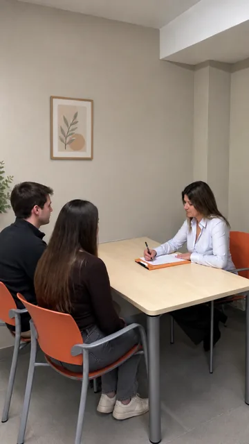
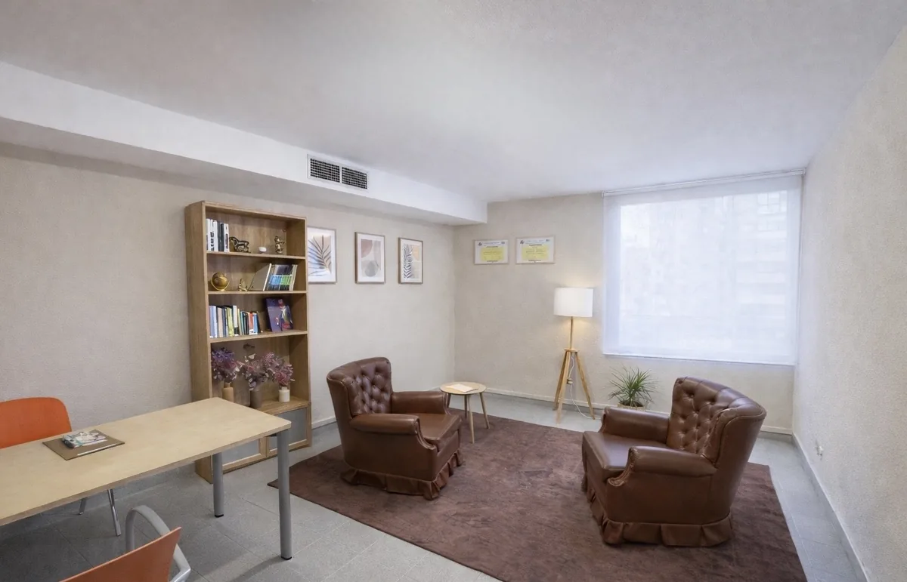
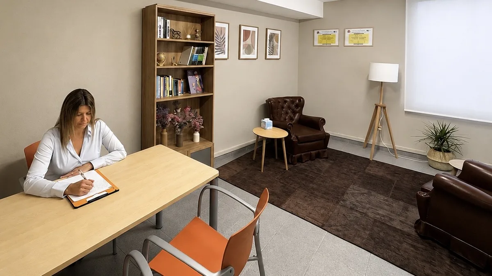

Sobre mí
Psicología clínica con criterio y sin prisa.
Soy Deborah Beltran, psicóloga sanitaria en Girona. Trabajo desde la psicología integradora, presencial y online, en castellano y catalán.
Casi nadie llega sabiendo qué le pasa.
Atiendo en consulta a adultos, adolescentes, parejas y familias.
Muchas personas llegan a consulta sin saber exactamente qué les pasa. No sabe si lo que siente es ansiedad, agotamiento, tristeza, inseguridad, culpa o simplemente el cansancio de llevar demasiado tiempo sosteniéndolo todo. Poner nombre a eso forma parte del trabajo, no es un requisito para empezarlo.
Escucho con calma y acompaño a la persona a comprender lo que le ocurre y a actuar en consecuencia.
Mi enfoque
Psicología integradora: qué implica en consulta
Significa que no trabajo con un único modelo de intervención. La elección de las técnicas responde a la evaluación de cada caso: a la demanda de la persona, a su situación, a sus objetivos terapéuticos y a su momento vital. El proceso se revisa periódicamente y, si una intervención no está dando resultado, se reformula.
-
01
Escuchar
Sin interrumpir con hipótesis prematuras.
-
02
Comprender
Qué te está pasando y desde cuándo.
-
03
Analizar
Qué lo mantiene hoy, más allá de su origen.
-
04
Marcar objetivos
Concretos, tuyos y revisables.
-
05
Intervenir
Con las herramientas que encajen contigo.
-
06
Revisar
Y ajustar lo que no esté sirviendo.
Las herramientas se eligen, no se aplican en serie.
Según lo que necesites, el trabajo puede apoyarse en algunas de estas. No es un menú: son recursos que se ponen sobre la mesa cuando encajan.
- Psicoeducación
- Reestructuración cognitiva
- Pensamiento socrático
- Pensamientos automáticos
- Defusión cognitiva
- Regulación emocional
- Técnicas de respiración
- Grounding
- Autoestima
- Autoconocimiento
- Autocompasión
- Límites
- Apego
- Patrones relacionales
- Comunicación
- Resolución de conflictos
- Trabajo con valores
- Ansiedad y estrés
- Perfeccionismo
- Procrastinación
- Prevención de recaídas
El espacio
Dónde nos vemos
Carrer de la Sèquia, 3, en Girona. Un despacho tranquilo y discreto, pensado para poder hablar sin prisa. Y si te encaja mejor, sesiones online con la misma estructura.


